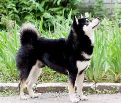
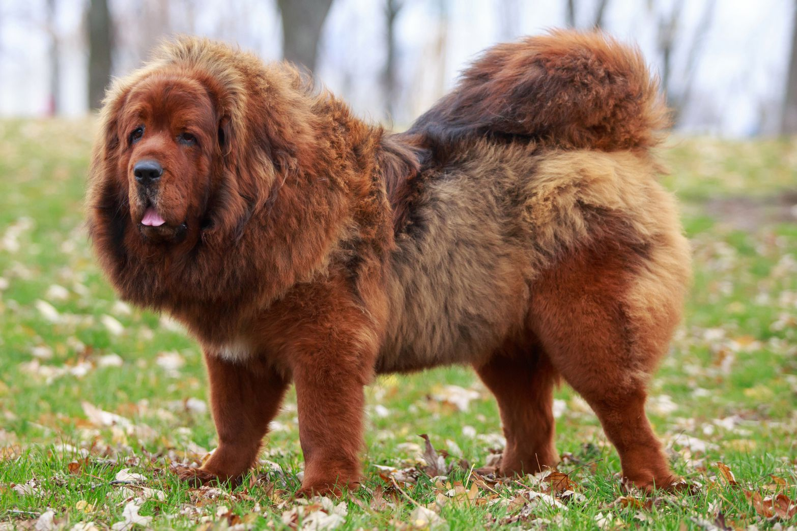
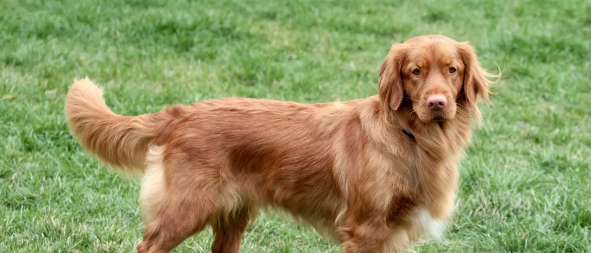

Shibas are cute!!!
An ancient Japanese breed, the Shiba Inu is a little but well-muscled dog once employed as a hunter. Today, the spirited, good-natured Shiba is the most popular companion dog in Japan. The adaptable Shiba is at home in town or country. Brought to America from Japan as recently as 60 years ago, Shibas are growing in popularity in the West and are already the most popular breed in their homeland. Their white markings combined with their coloring (red, red sesame, or black and tan) and their alert expression and smooth stride makes them almost foxlike. They're sturdy, muscular dogs with a bold, confident personality to match.
Watchful, aloof, imposing, and intimidating: The ancient Tibetan Mastiff is the guardian dog supreme. These densely coated giants are mellow and calm around the house, sweetly devoted to family, and aloof and territorial with strangers. Coming face to face with this ancient behemoth, an intruder up to no good will likely move on to easier pickings. TMs can stand 26 inches at the shoulder and weigh well over 100 pounds. It's impossible to discuss this breed without leaning on words like 'powerful,' 'muscular,' massive,' and 'substantial.' And yet, TMs are quite light-footed and will meet a perceived threat with surprising agility. The broad head, with its high-set, V-shaped ears and expressive brown eyes, projects a noble, sagacious expression.
The smallest of the AKC's retrievers, the Nova Scotia Duck Tolling Retriever is intelligent, affectionate, and eager to please. Play fetch with a tireless Toller until your right arm falls off, and he will ask you to throw left-handed. The little gundog with the big name is the smallest AKC retriever, standing ideally 18 or 19 inches at the shoulder. The Toller's trademark is a coat of stunning crimson, ranging from golden red to a dark coppery color, with white markings. Strong and agile, Tollers are medium dogs: medium in size, bone, and coat length. The almond-shaped eyes project an alert expression. Tollers are upbeat athletes who require outlets for their boundless vigor: hunting, hiking, camping, and, of course, swimming (for which they are ideally suited, down to their webbed feet). Tollers are smart, handsome, affectionate companions, but these red tornadoes can be recommended only to those with enough time and energy to keep them usefully occupied.
